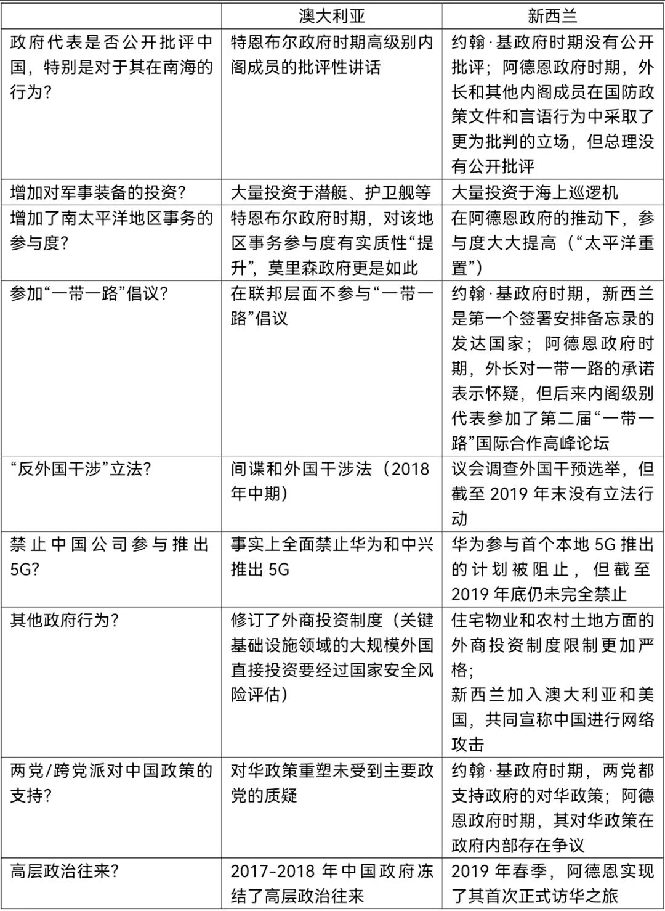
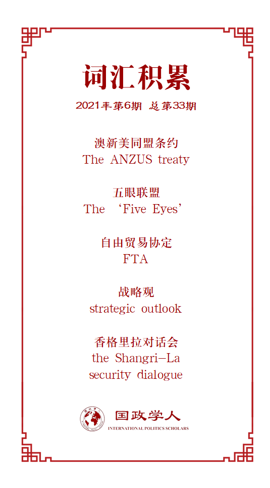

收录于合集

作品简介
【作者】 Patrick Köllner，德国全球与区域研究所（GIGA） 副所长，GIGA亚洲研究所主任。
【编译】 石稚瑄（国政学人编译员，国际关系学院国际政治系）
【校对】 张鸿儒 孙唯一
【审核】 阮镇炜
【排版】 黄晨蕊
【美编 】游钜家
【来源】 Patrick Köllner. Australia and New Zealand recalibrate their China policies: convergence and divergence, The Pacific Review , Vol. 34(3), 2021, pp. 1-32. Doi: 10.1080/09512748.2019.1683598.
【归档】 《国际关系前沿》2021年第6期，总第33期。
期刊简介
《太平洋评论》（ The Pacific Review ）是太平洋地区研究的主要平台，作为跨学科期刊，其宗旨和目标为打破研究领域之间以及学术界、新闻界、政府和商界之间的壁垒，重点关注政策问题。根据Journal Citation Reports显示，2019年该刊的影响因子为1.633，在区域研究类SSCI期刊中排名11/77，在国际关系类SSCI期刊中排名第35/95。
**澳大利亚和新西兰重新调整
**
其对华政策：趋同与分歧
Australia and New Zealand recalibrate their China policies: convergence and divergence
Patrick Köllner
内容提要
近年来，澳大利亚和新西兰一直处于“西方”与中国之间日益加剧的对抗中的最前沿。尽管与中国有着非常密切的经济联系，但两国都大大改变了与中国打交道的方式。本文评估并比较了澳大利亚和新西兰对华政策的重新调整，着重强调了随着时间推移两国处境的相似之处和不同之处。澳大利亚联邦政府最先对其对华政策进行重大“重置”，其在2018年制定了关于间谍活动和外国干涉的法案。在政府更迭之后，新西兰政府似乎追随了澳大利亚的脚步。但新西兰对华政策的调整并不那么直接，更具争议性，也更加模棱两可。小国理论在一定程度上解释了新西兰更为矛盾的态度。要想对此有全面的理解，就需要比较新西兰和澳大利亚的战略观，包括贸易在其外交事务中的至关重要性。
文章导读
01
导论
澳大利亚在2017年和2018年对其对华政策进行了重大调整。它的邻国新西兰也调整了其对华政策。本文总结并比较了澳大利亚和新西兰对各自对华政策的调整，着重强调了随着时间推移两国处境的重大异同。新西兰对华政策的调整不如澳大利亚直截了当，而是更具争议性，总体上也更加模棱两可。因此，本文的研究问题是： 为什么新西兰没有完全追随澳大利亚的脚步？
02
澳大利亚和新西兰：
相似和差异
将两个大洋洲国家联系在一起的纽带
澳大利亚和新西兰都是历史悠久的议会制民主国家；都有盎格鲁- 凯尔特人的血统、被大英帝国统治的历史、相同的君主；都以自由贸易为主，且都拥有强大的第一产业。两国在经济上紧密合作，共享商品和服务的共同市场。澳大利亚和新西兰的公民一定程度上被允许在另一国居住和工作。因此，整个塔斯曼海两岸不断有人员、商品、服务和思想的交流。文化交流亦是源远流长。
澳大利亚和新西兰之间的紧密联系也包括安全和情报合作。《澳新美同盟条约》承诺两国共同防御外部侵略。澳大利亚、新西兰、美国、英国和加拿大一起组成了五眼联盟，在各自负责的地区进行电子监控，并定期交流。
将它们与中国联系在一起的纽带
对于澳大利亚和新西兰的经济而言，中国扮演了极为重要的角色。澳大利亚的矿石和煤炭以及新西兰的乳制品、其他农业和林业产品在其对中国的出口中占有重要地位，而中国主要向它们出口制成品。对中国而言，澳大利亚和新西兰都是有吸引力的贸易伙伴，但两国的相对重要性不仅在贸易额上有所不同，而且在中国进口产品上也有所不同。可以说，澳大利亚的矿产品出口对中国具有更大的战略价值，可能比新西兰更具弹性的出口产品更难替代。
澳大利亚和新西兰分别与中国签署了自由贸易协定和更广泛的战略伙伴关系协定。对于两国而言，中国现在都是第一大贸易伙伴。货物和服务加在一起，澳大利亚对华贸易约占其贸易总额的四分之一，而新西兰对华贸易则占其贸易总额的五分之一。两国服务部门的重要收入来源是中国游客和学生。
从结构上讲，澳大利亚和新西兰与中国的关系是不对称的。 布兰特利·沃马克（Brantly Womack）将这种关系定义为“由于实力的差异，实力较小的一方明显比实力较大的一方更容易受到（与他国）互动的影响，但实力较大的一方却不能单方面主导双边关系”。 新中关系在实力方面的差异要比澳中关系大得多，对新西兰而言，这将导致更大的脆弱感，同时也突显了关系管理的重要性。
03
新西兰与澳大利亚有何不同
在国际体系中的规模和地位
与澳大利亚相比，新西兰的人口、经济和国防支出要少得多，这解释了为什么前者在国际体系中被广泛视为中等国家，而后者却被视为小国。 由于人口和经济规模小，小国在资源和能力方面的总体结构性权力较小，且军事实力可能较弱。 尽管存在这些限制，但小国仍有很大的回旋余地和进行战略定位的空间。小国能根据实际情况采取不同的安全策略，从与大国结盟到非武装的中立。
战略观
新西兰较小的规模影响了它的战略观。在新西兰政策制定者的外交政策声明和讲话中，“小巧”（smallness）是一个不变的主题。另外，尽管澳大利亚和新西兰相对亲近，但两国在地理位置上却有所不同。澳大利亚既与太平洋和印度洋接壤，又接邻东南亚，而新西兰唯一的真正邻国是澳大利亚，澳大利亚的大陆规模为新西兰提供了一种天然的庇护所。在北部，新西兰以其分散的岛屿与南太平洋相邻，它的很大一部分人口来自这些岛屿。 尽管两国过去都在亚太地区拥护多边倡议，但它们不同的地理位置有助于解释为什么澳大利亚政府近年来提倡将印太作为一个统一的地理战略地区，而新西兰一直将重点放在南太平洋。
新西兰的战略观与澳大利亚不同的另一个原因是它们与美国的关系并不相同。两国的政治精英都认为美国应继续积极参与亚洲事务，而这种参与对澳大利亚而言则更为重要，因为澳大利亚的安全政策取决于与美国的联盟。另一方面，新西兰在1980年代中期就已经不再是美国的正式盟友。尽管与美国建立了更紧密的安全联系，但新西兰对于被视为美国在亚太/印太安全立场上的一分子仍然持谨慎态度。 在政治上，尤其是在安全领域，澳大利亚与美国保持着比新西兰与美国更加一致的状态。
最后，新西兰的战略观是由非常强烈的贸易需要所塑造的。尽管澳大利亚政府和新西兰政府都将促进贸易视为外交政策的组成部分，并试图将安全和贸易事务区分开来，但贸易政策对新西兰更为重要。新西兰的国内市场很小，因此其经济繁荣依赖于对外贸易，并且更容易受到国际经济波动的影响。为了最大程度地提高利益和影响力，历届新西兰政府都致力于外交和任命才华横溢的人员，以寻求签署自由贸易协定并填补相关地区和国际组织的重要职位。
04
澳大利亚调整对华政策
澳大利亚和新西兰各自与美国的安全关系以及与中国密切的经济关系使两国处于潜在的困境中，如果它们被迫选边站队，这可能会变成一个真正的困境。两国政府都希望避免在中美之间或者在其安全和经济利益之间做出选择。 由于与华盛顿的战略关系不那么紧密，而且国家规模较小，新西兰比澳大利亚有更大的机会摆脱这种零和博弈的困境。
“重置”的外部维度
2016年后，中国在南中国海自信的增强让澳大利亚感到不安。澳大利亚内阁成员在2017年公开对中国采取了越来越严厉的态度。3月，时任澳大利亚外交部长朱莉·毕晓普在新加坡的一次公共论坛上发表讲话，不加掩饰地抨击了中国，对新兴大国利用“新获得的力量来挑战现有的领土或战略边界，或将其政治意愿强加于人”表示关切。在几个月后的香格里拉对话会中，总理马尔科姆·特恩布尔更为直接地指出，他担心中国会“试图在南半球实行门罗主义（Monroe Doctrine），以统治该地区”，并敦促中国尊重“其他国家的主权”。
堪培拉政策制定者的另一个忧虑是中国在南太平洋的影响力不断扩大，而该地区经常被视为澳大利亚的“势力范围”。堪培拉战略界担心中国提供给南太平洋国家的贷款最终将导致后者的政治依赖。他们还担心中国对该地区港口发展的明显兴趣可能是出于在该地区建立军事基地的愿望。
“重置”的内部维度
2017年，当澳大利亚国会阻止了双边引渡条约和关于澳大利亚参与“一带一路”倡议的谅解备忘录时，对中国日益自信的外交政策的担忧在澳大利亚政治中变得更加明显。澳大利亚决策者和情报界特别关注中国统战部门的活动。
媒体和学术界对中国寻求影响力活动的关注，再加上澳大利亚情报机构的一再警告以及达斯特阿里事件的最终结果，促使联邦政府于2017年12月提出了反干涉立法。2018年6月，在参议院和众议院的两党支持下，联邦议会通过了《国家安全立法修正案（间谍和外国干涉）法》。
“反外国干涉法”是澳大利亚重新调整其对华政策的一个高峰。然而，事情并没有就此结束。尽管特恩布尔总理在2018年8月的一次对华政策重要讲话中表达了和解信号——观察者认为这是对“重置”的重置——这确实意味着政府已放弃了其更为强硬的方法。同月晚些时候，由于安全方面的考虑，澳大利亚禁止中国电信公司华为和中兴参与在当地推出5G技术。这使澳大利亚成为第一个事实上禁止中国公司进入5G网络的国家。特恩布尔后来解释说，政府做出这个决定是为了在未来对华关系可能恶化的情况下对冲对其不利的“意外事件”。
05
新西兰重新调整对华政策
接受中国的崛起
新西兰历届政府都接受了中国的崛起及其为新西兰带来的经济机遇。实际上，在过去的几十年中，强烈的商业倾向为新西兰与中国的关系增添了色彩。2008年新西兰与中国签署了双边自贸协定，比澳大利亚早了7年。 2014年，新西兰与中国发表联合声明，把双边关系提升为全面战略伙伴关系。2015年，新西兰是第一个成为亚洲基础设施投资银行意向创始成员国的发达国家。2017年两国签署了《中新关于加强“一带一路”倡议合作的安排备忘录》。
在约翰·基政府的领导下，新西兰在南海问题上的态度也不同于澳大利亚。澳大利亚政府曾多次公开对南海问题表示担忧，而新西兰在2016年之前对此事一直保持低调，并没有抨击中国的行为。即使在非公开的场合中，政府代表也是强调各方应避免局势恶化，并根据国际法和平解决问题。在公开场合，新西兰政府还认为，无需担心中国在南太平洋地区不断扩大的存在。
2018年全面“重置”的迹象
与新中关系相关的重大举措于2018年开始展开。3月初，副总理彼得斯宣布了政府的 “太平洋重置”举措（‘Pacific Reset’ initiative） 。他将其定义为对在该地区不断扩大的影响力和资源竞争的回应。即使没有直接提及中国，但很明显，这主要是指中国不断增加的存在。
除了“太平洋重置”计划外，许多其他的政府举措和声明也表明，新西兰对中国的态度正在大规模“重置”。2018年3月，彼得斯对新西兰政府支持“一带一路”倡议的承诺表示怀疑。他辩称，倡议的去向尚不明确，并批评约翰·基政府仓促签署协议。
到2018年底，事情发展到了顶点。11月，出于安全考虑，隶属于新西兰情报机构的政府通信安全局（GCSB）阻止了电信运营商Spark的竞标。Spark最初打算在本地首次使用5G技术时使用华为的设备。
综合考虑，这似乎是新西兰对华政策的全面“重置”，引发了人们的猜测，即新西兰正在“转向其传统的《澳新美同盟条约》（ANZUS）合作伙伴”。相较于澳大利亚的回应，新西兰并没有在“外国干涉”方面立法。
修复关系：“二月恐慌”及以后
到2019年2月，阿德恩仍未访问过中国，而需要更新的自由贸易协定似乎为北京一方所推迟。从2月下旬开始，情况有所恢复——即两国外交部和中国驻新西兰使馆发表和解声明；中新旅游年终于拉开帷幕；阿德恩在2019年4月访问北京。
随着阿德恩在2019年掌管对华政策，新西兰看似清晰的对华关系“重置”失去了一些锋芒。但是，这种重新调整并没有完全颠覆之前的政策。无论如何，在约翰·基政府领导下盛行的那种“单眼对待中国的方法（好像那个国家是一个大市场而几乎没有其他市场）”（monocular approach to China）已经让位于对与中国建立紧密联系所带来的机会和风险的更加清醒的评估。
06
总结：比较澳大利亚和新西兰对华政策的重新调整
前两个部分评估了澳大利亚和新西兰最近对中国政策的重新调整。表1总结了多个领域跨越时间的相似性和差异。
表1.
2016-2019年澳大利亚和新西兰的中国政策维度

译者评述
随着中国实力的不断提升，中美竞争日趋激烈。处于中美竞争前沿的澳大利亚和新西兰迫切地需要做出战略选择。尽管与中国的经济联系都非常紧密，但两国都重新调整了各自的对华政策。本文首先比较了澳大利亚和新西兰的异同，然后强调了两国在国际体系中的规模和地位以及战略观的区别，最后比较了两国对华政策的重新调整。作者认为，澳大利亚政府率先调整对华政策；而新西兰在约翰·基政府时期对华较为友好，阿德恩政府上台后也调整了对华政策。但相比之下，新西兰对华政策的调整不如澳大利亚直接，总体上也更加模棱两可。这种差异的背后是两国在国际体系中不同的规模和地位以及受此影响的战略观。
2017年以来，中澳关系摩擦不断。新冠肺炎爆发以来，澳大利亚对中国表示出极大的敌意，比如其外长、总理提议绕开世卫组织，就疫情源头对中国进行独立调查，这严重挑战了两国关系。虽然阿德恩政府上台后重置对华政策，回调约翰·基政府时期对华友好的战略，但在关键问题上新西兰并不追随澳大利亚的领导。比如新西兰拒绝参与“五眼联盟”针对香港局势的反华联合声明，没有参与以美国为首的13国质疑世卫组织新冠疫情溯源报告的联合声明，反对“五眼联盟”对超出其职权范围的问题集体发声等。在中国崛起的当下，研究澳大利亚和新西兰对华政策的调整及差异，可以理解相关国家对华行为背后的逻辑，预判其战略选择，有利于中国弱化针对自己的同盟，减轻安全压力。这无疑极具现实意义。
词汇整理

文章观点不代表本平台观点，本平台评译分享的文章均出于专业学习之用, 不以任何盈利为目的，内容主要呈现对原文的介绍，原文内容请通过各高校购买的数据库自行下载。
好好学习，天天“在看”
国政学人
支持学术公益与知识传播
微信扫一扫赞赏作者 __赞赏
已喜欢，对作者说句悄悄话
取消 __
发送给作者
发送
最多40字，当前共字
上一页 1/3 下一页
长按二维码向我转账
支持学术公益与知识传播
受苹果公司新规定影响，微信 iOS 版的赞赏功能被关闭，可通过二维码转账支持公众号。